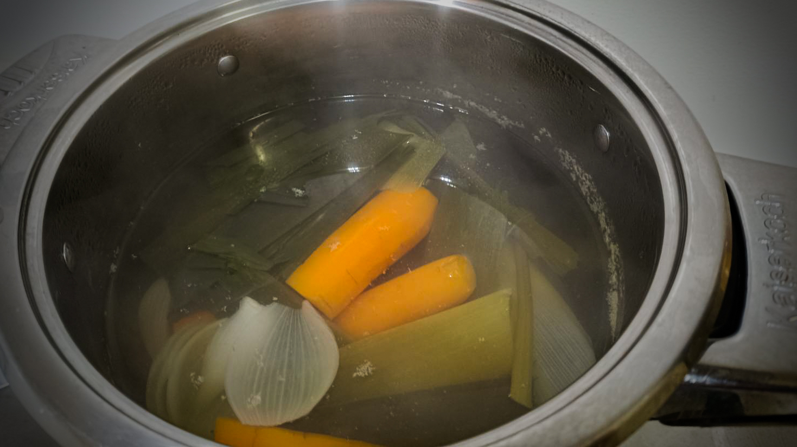
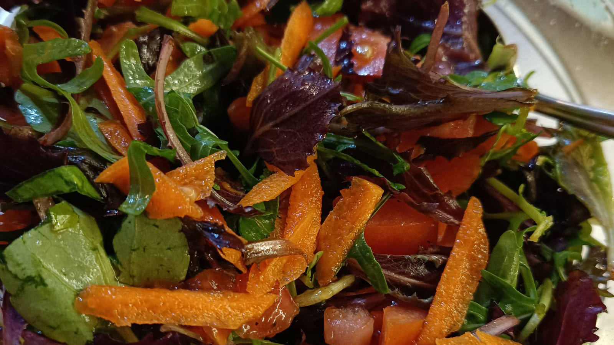

General Instructions
Table of Content
General Instructions
Global Notes
Start of the week: The first dinner is planned for Monday.
Measurements: This plan and its recipes are intended for the European market. It is grounded in the metric system and contains products available in Europe.
Precision: The given weight in grams has a tolerance of at least 20%. Example: If the recipe says 100g of onion, you can use between 80g and 120g. The recipe will still work. That way you can compensate small and big appetite and avoid tiny leftovers from prepacked food.
Time estimate: 1 hour of prep time is plenty for the dishes of this plan and adequate for beginners.
Clean food: Wash all food and peel if necessary before using it. Thoroughly rinse canned beans, since the fluid contains lots of salt and conservation agents.
Keep it simple: You can use canned beans and vegetable stock from powder.
Using dry beans and home-made stock: If you want to use food as unprocessed as possible, see the schedule to soak the beans the night before and cook them in the slow cooker in time. See How to Cook Beans. Also, you can prepare your own vegetable stock.
Bean weight: All recipes give the weight for already cooked beans. Generally, weight conversion is roughly this:
dry beans x 2,2 = cooked beans.
Example: 200 grams of dry beans make at least 400 grams. Some beans rather have factor 2.5, like kindney beans.
Freezing and No-Freezer Option
In this plan, you eat only one meal on two consecutive days, Wednesday and Thursday. The meals prepared on Monday and Tuesday should go either into the freezer compartment or the freezer.
If you don’t have a freezer, you can simply eat the meal prepared the day before.
Beans spoil quite quickly and should not be stored in the refrigerator for more than 2 days.
Preparing Beans, Veggy Stock and Salad
How to Cook Beans
Pro tip 1: Add a pinch of soda (bicarb) to the water when cooking beans; it prevents them from not getting soft.
Pro tip 2: Don’t add salt. With salt, it takes longer until the beans are cooked.
Pro tip 3: Soak beans at least for 12 hours, and black beans and large beans for 24 hours.
Buy quality
Beans have different qualities and cooking times. Sometimes they can be stubborn and stay hard forever. Soda helps, but also the quality of the beans is important. If your beans stay hard, consider buying them elsewhere next time.
Use a Slow Cooker
Meal prep doesn’t make sense if you have to watch your beans in the pan for an hour. Use a slow cooker with a timer. You can use a timer for the wall plug, if your slow cooker has no timer.
Thoroughly rinse the beans.
Put the beans into the slow cooker, start the slow cooker at 95°C and set the timer:
Kidney beans, Pinto beans, chick peas 2 hours
Black beans, large beans 3 hours
Add a pinch of soda.
Fill up with boiling water until at least 2cm above the beans
Optional: Add 1 tomato, 1 onion, 1 carrot and leftover leek to the beans. You can use the cooking water as stock for recipes like Green Dhal or for soups.
Put a strainer on a pan and strain the stock to keep it. Otherwise, strain off the water. Keep cooked beans and stock in a closed container in the fridge until you need them.
How to Make Vegetable Stock (Boullion) Yourself
Option 1: Save work and make vegetable stock by using the cooking water of the beans. When cooking beans in the slow cooker, add 1 tomato, 1 onion, 1 carrot and leftover leek to the beans and use the cooking water as stock.
Option 2: Cook 1.5 liter of water with 1 tomato, 1 onion, 1 carrot and leftover leek for 30 minutes on low heat. Don’t add salt! Strain the stock to keep the liquid and discard the vegetables.

How to Make a Salad Side Dish
In the recipes of this plan, you will find salad as an ingredient in the shopping list. Salads are nicely fresh and contain extra vitamins. A salad is a great side dish and complements the GGB diet by adding more Green. Follow your taste, but keep it simple. Also, consider what kind of ingredients for a salad stay fresh for a couple of days.
In the shopping list, there is lettuce and carrots planned for the side salad. Feel free to change it:
- Choose your ingredients: lettuce, carrot, tomato, cucumber, onion, bell pepper, anything you like, and put it on the shopping list.
- Wash the ingredients and chop or grate them.
- Add salt, pepper, olive oil and lemon juice or vinegar.
- Make notes on what you like and how much you need to adjust your shopping list for next time.
